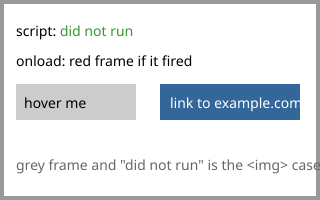

probe.svg carries a <script>, an onload
handler, a :hover rule and a link to another site, all of which SvgValidator
rejects. Shown through <img> a browser blocks every one of them at
render time. Opened directly the same file runs them all. That difference is why the rules
reject what a browser merely neutralizes. This page exists to check the difference is still
there; see docs/internal/browser-research.md, section 8.
Serve the folder over HTTP, with Apache or any other server, so the direct open gets a
real image/svg+xml response. Without a server:
php -S localhost:8000 -t tools/img-vs-direct

| Effect | img and background | Opened directly |
|---|---|---|
| script | "did not run", green | "RAN", red |
| onload handler | grey frame | red frame |
| :hover rule | stays grey | turns yellow under the mouse |
| link | not clickable | opens example.com |
If a browser ever shows the right-hand column as the left-hand column when the file is opened directly, Chromium issue 40094872 has shipped in that browser. The rules do not change either way: other browsers and server-side rasterizers still see the file as a full document.